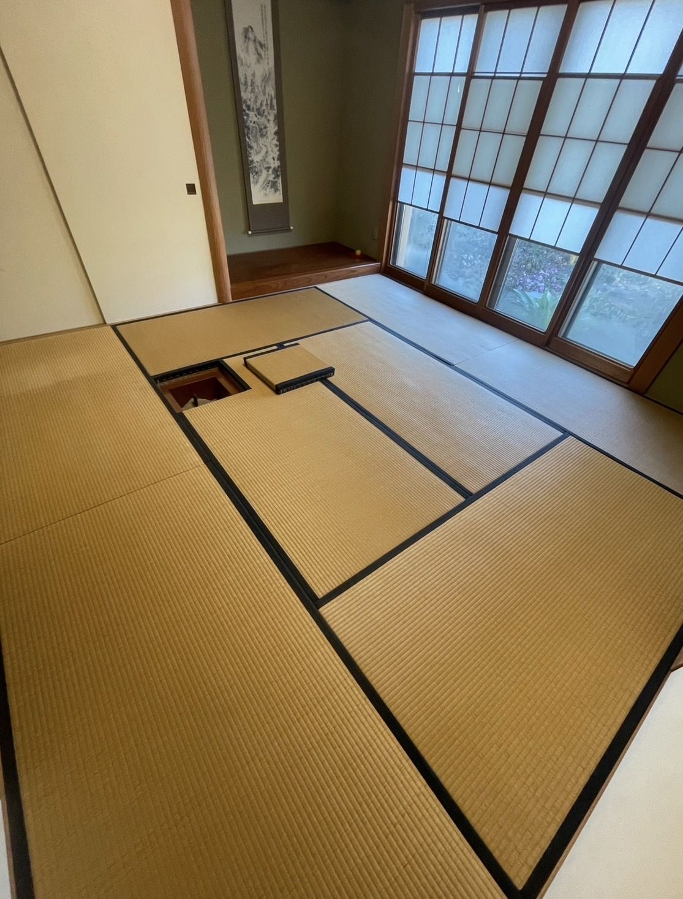
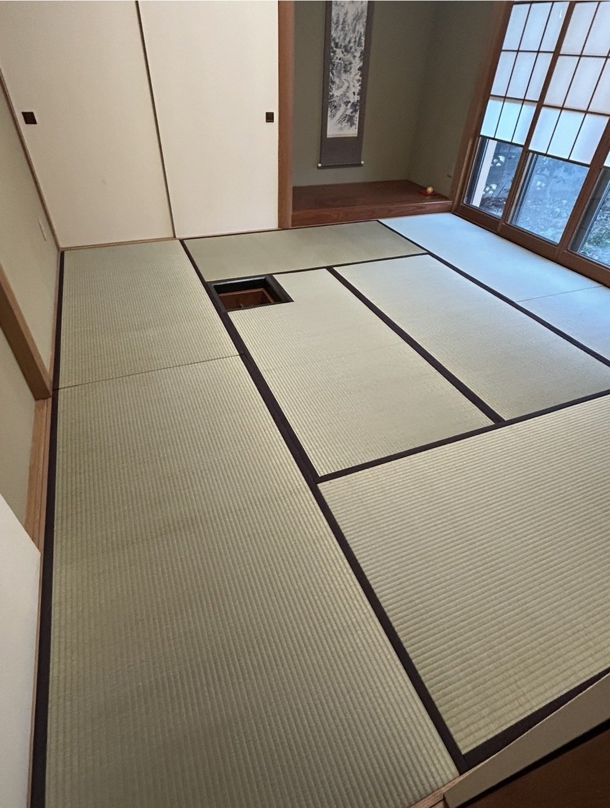
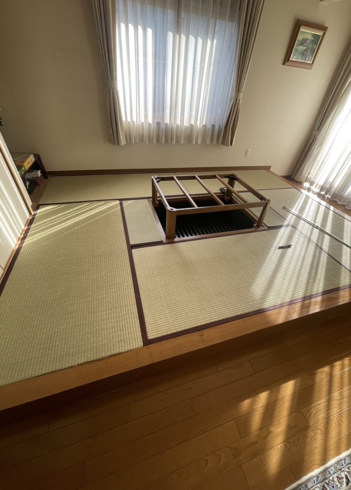
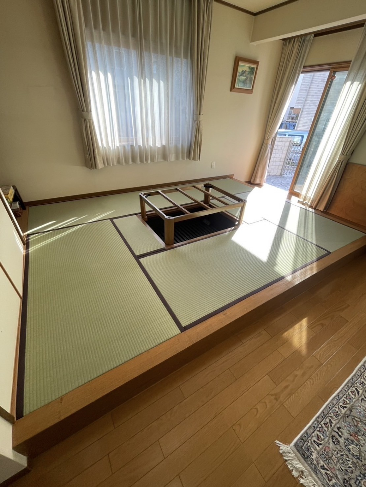
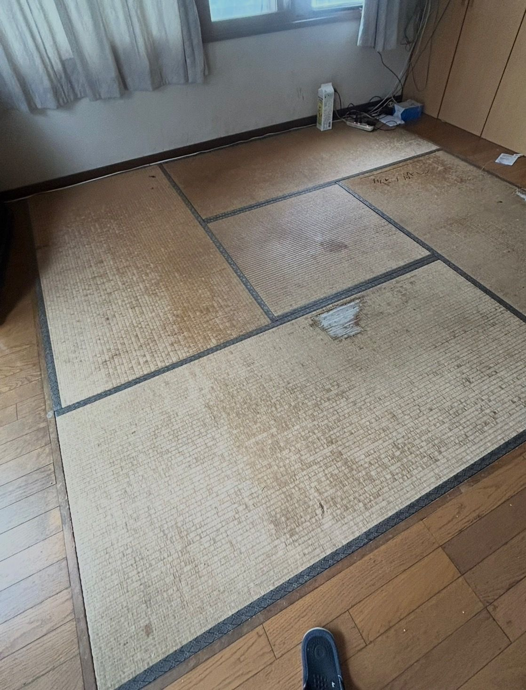
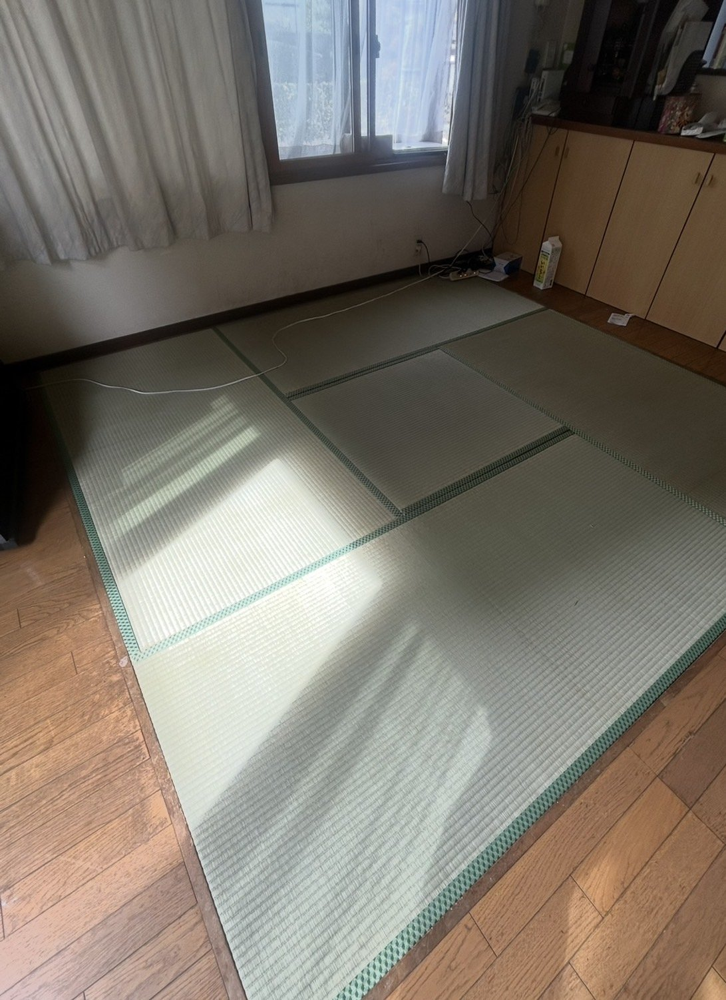
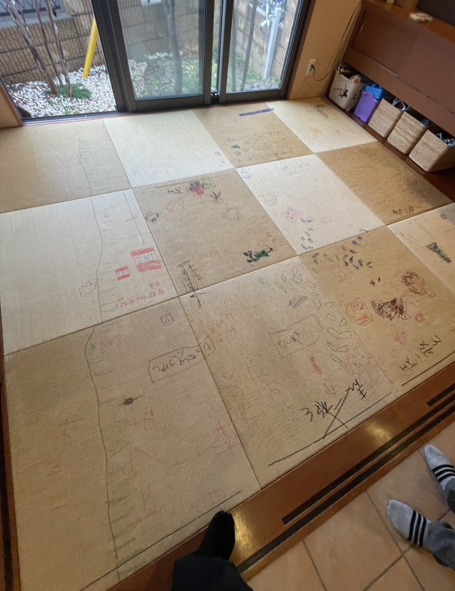
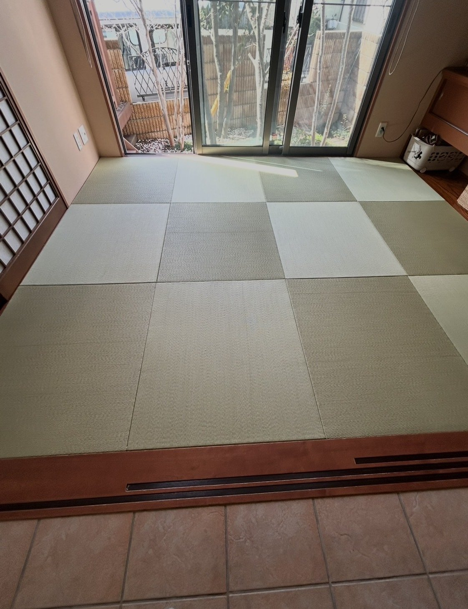
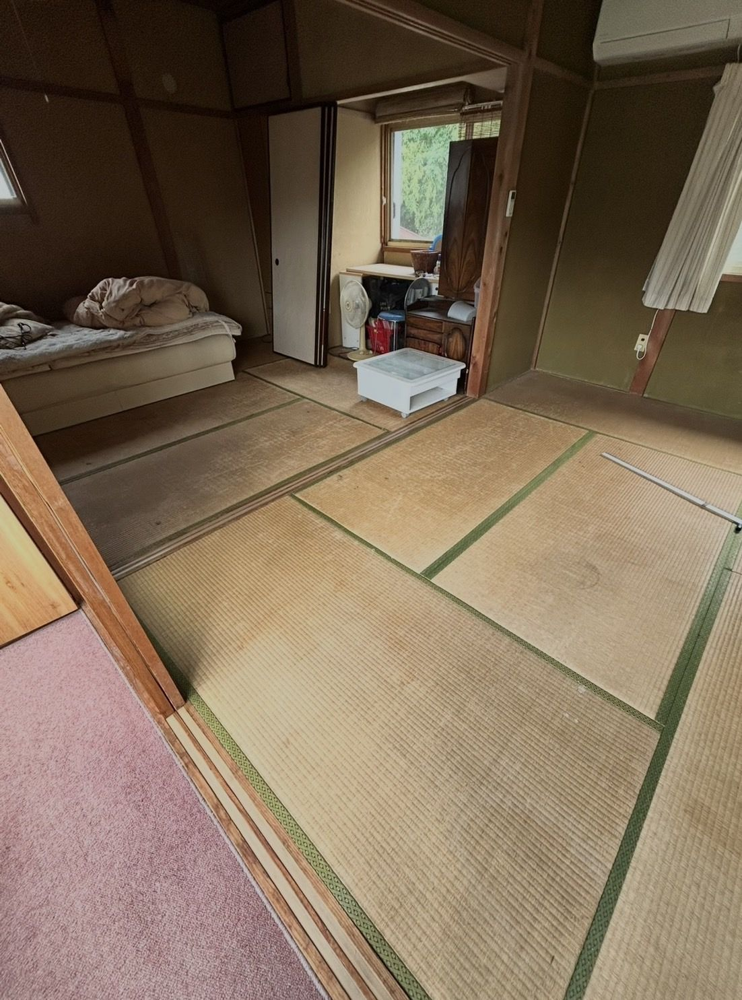
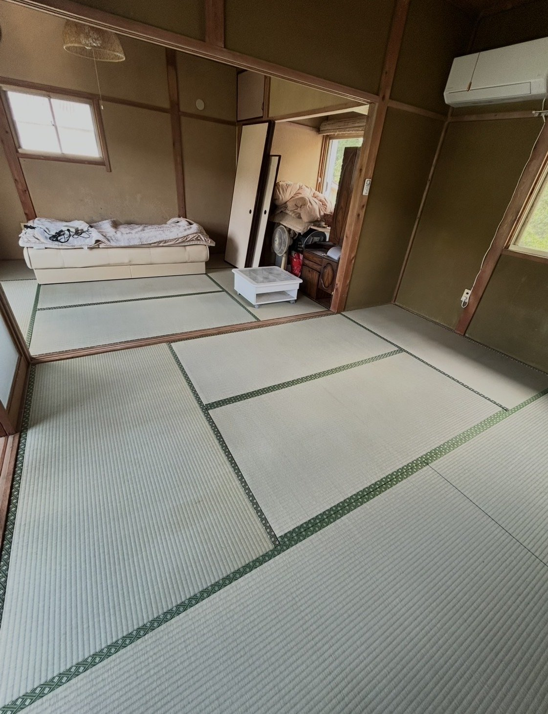

  事例1 お客様藤岡市 茶道の先生 きっかけ4代目の出身校茶道の先生の師匠 施工内容国産い草 表替え黒の純綿畳へり付き8畳 費用感・期間８万円スピード対応 4日 他の畳屋さんと仕事の仕方が違うとても良かった
  事例2 お客様宿泊施設の所長さん きっかけ宿泊施設に入れたときにとても良かったのでぜひうちにも入れてほしい 施工内容和紙表 表替え6畳 費用感・期間６万円10日 綺麗な畳をありがとうございます
  事例3 お客様上里町 お世話になっている建設屋の部長さん きっかけ現場などでお世話になっていてうちにもぜひと言われた 施工内容国産い草 表替え4畳半 費用感・期間４万円1日、スピード対応 新築になったみたい匂いがとてもいい
  事例4 お客様本庄市 居酒屋のママ きっかけお世話になっている社長さんからの紹介 施工内容和紙表 表替え半畳１２枚 費用感・期間１２万円2日、スピード対応 倉林さんにやってもらえて良かった
  事例5 お客様神川町 2代目の頃からのお得意様 きっかけ2階で子供達が寝れるようにしたい 施工内容国産い草 表替え6畳2間 12畳 費用感・期間１１万円2日、スピード対応 また頼みたい